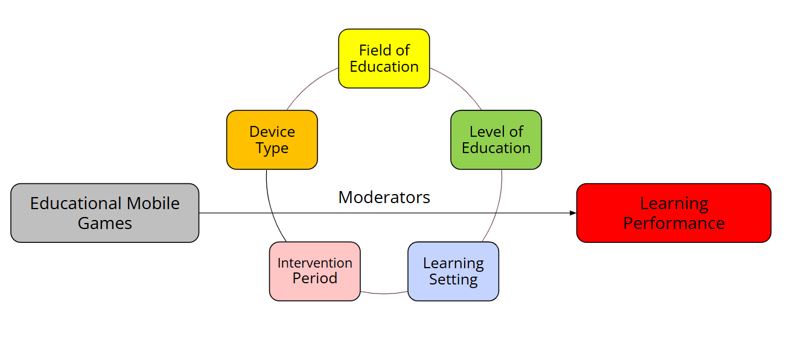

Ahmed Tlili, Michael Agyemang Adarkwah, Soheil Salha, Juan Garzón, Kinshuk & Daniel Burgos
Published online: 31 Jan 2024.
This article was published in the journal Interactive Learning Environments,
a respected peer-reviewed journal focused on educational technology and learning sciences.
Background and Research Gap
Previous meta-analyses on educational games consistently report positive effects on learning performance,
especially in language, science, and math.
Examples: Tsai & Tsai (2018, 2020), Kacmaz & Dubé (2022), Wang et al. (2022).Systematic reviews on educational mobile games show benefits such as increased motivation and improved learning outcomes,
but usually focus on specific subjects or use qualitative methods.
Sources: Schmitz et al. (2012), Gao et al. (2020), Su et al. (2021), Chang & Hwang (2019).
Research Gap:
No meta-analysis has explicitly and comprehensively focused on mobile educational games across all subjects and educational levels.
Research questions
- RQ1. What is the effect of educational mobile games on students’ learning performance in mobile learning?
- RQ2. How does the effect of educational mobile games vary according to the field of education in mobile learning?
- RQ3. How does the effect of educational mobile games vary according to the level of education in mobile learning?
- RQ4. How does the effect of educational mobile games vary according to the learning setting in mobile learning?
- RQ5. How does the effect of educational mobile games vary according to the intervention period in mobile learning?
- RQ6. How does the effect of educational mobile games vary according to the mobile device type in mobile learning?

Results
overall effect size: Hedge’s g = 0.97 CI = [0.90, 1.05]
variation in effect sizes: I² = 91.75 %
Conclusion
From a theoretical perspective, this study enriches the ongoing debate on how to design effective educational mobile games. It shows that considering only the features of mobile devices (e.g. mobility and connectivity) or games (mechanics, gameplay, etc.) is not a sufficient condition for achieving INTERACTIVE LEARNING ENVIRONMENTS 7293 positive learning effects. It is important to recognize that an adequate combination of mobile devices, employed within proper learning setting and guided by an adequate game design (including the suitable genre, mechanics, etc.), yields better learning performance. This study also shows that some educational mobile games might be more effective for specific fields or levels of education. In this context, several researchers (Dillenbourg et al., 2013; Dimitriadis et al., 2013) have stated that “orchestration” should occur between different components – namely technology, educational context, and users – to achieve compatible, efficient, and effective technology-enhanced learning. Therefore, to achieve such orchestration when using educational mobile games, more research and discussion should take place in this regard to deeply understand how they would be effective across several variables (not only those considered in this study). From a practical perspective, this study provides substantial evidence about which game genres in mobile learning would be more effective under which circumstances. Such findings can provide guidance to different stakeholders (e.g. developers, designers, and researchers) about the game genres to adopt and implement in their contexts, depending on various variables highlighted in this present study, for better learning performance.
Critical Remarks
A table listing all studies per moderator (e.g., genre, field, level) would improve transparency
Simple moderator analyses (e.g., like for game genre) would be preferable in addition to complex interaction terms
Some important variables were ignored, despite high residual heterogeneity
- Theoretical grounding of games
- Game quality and learner perception
Conclusion for Steakholders
- Choose game genres carefully!
- Consider the device and setting!
- Don’t assume all educational games work the same!